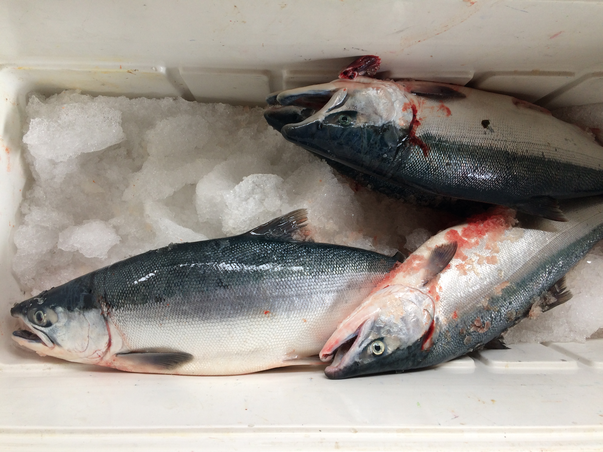
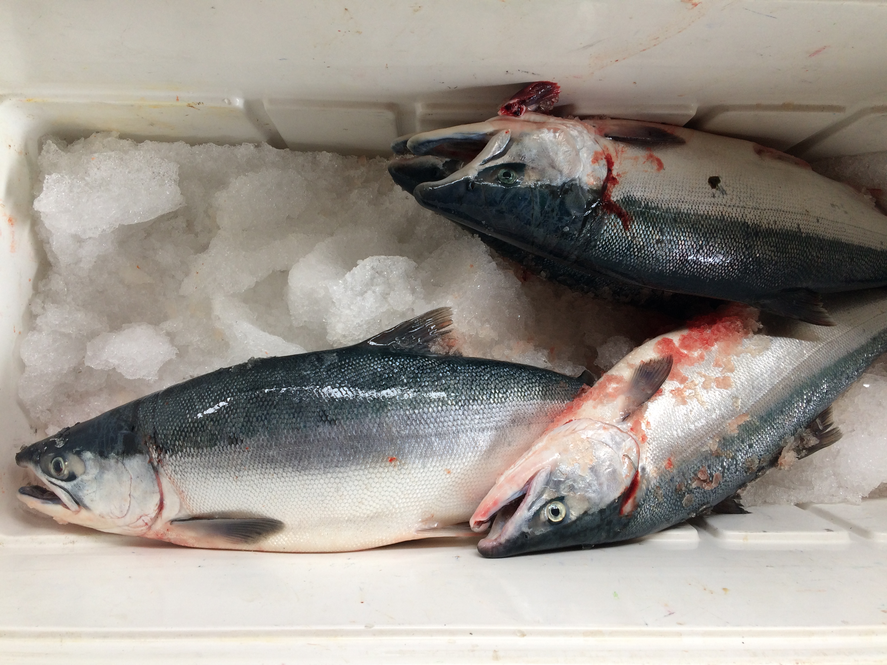

About Me
I grew up in the small fishing town of Cordova, Alaska. Both of my parents fished commercially and I learned from a young age that hard work and resiliency will get you far in life.
 

After graduating High School, I attended the University of Alaska, Fairbanks. I studied drawing and painting and eventually transferred to the Oregon College of Art and Craft in Portland, OR.
After a year of art school, I wanted to take my career into a seemingly more practical direction. I attended Portland Community College and got my Associates in Dental Lab Technology. I moved back up to Alaska and began my career as a Dental Lab Technician. I worked for the same company for five years and learned to fabricate both dentures and crowns. I enjoyed the creative and problem solving aspects of my job, but I was beginning to get complacent and I felt like I had more to offer the world than beautiful dentures.